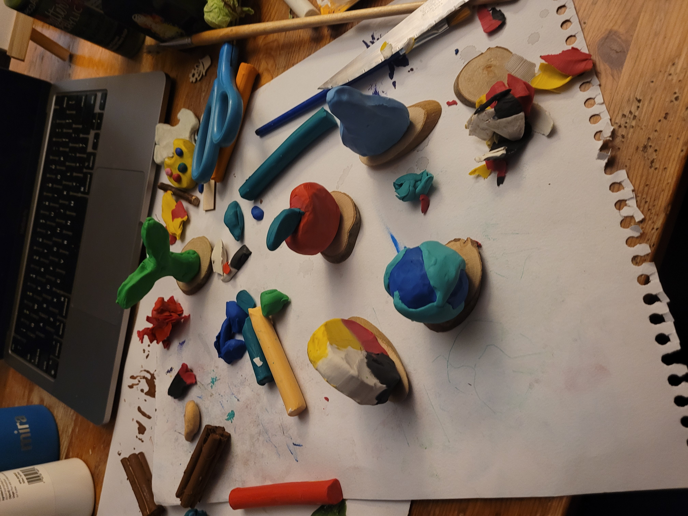
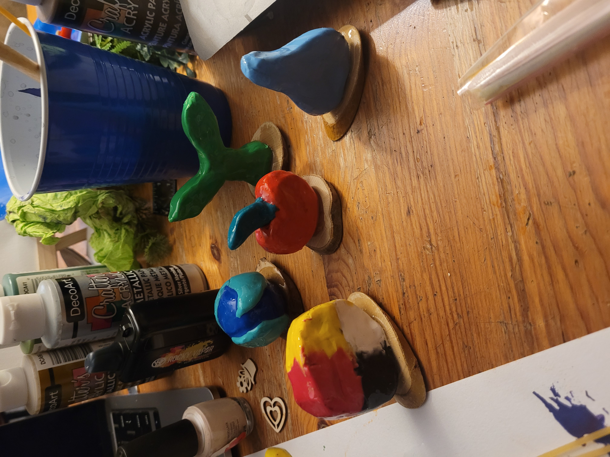
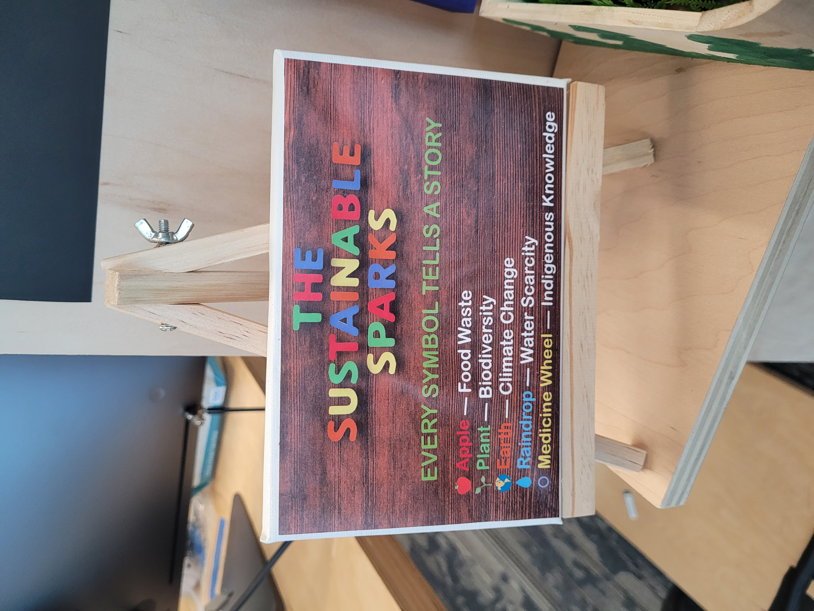
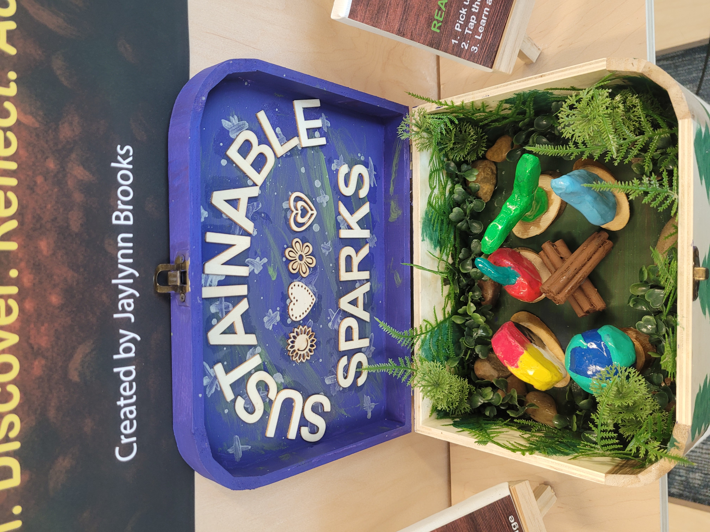
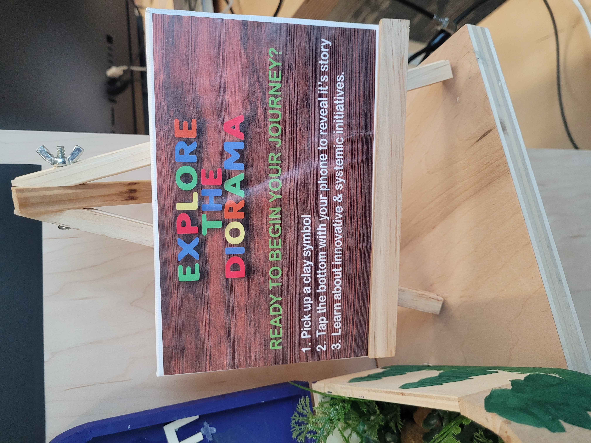
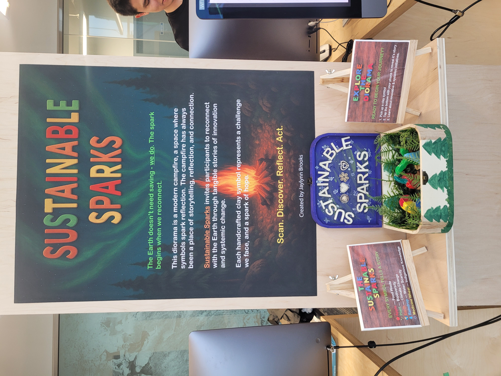

Sustainable Sparks
An interactive clay, NFC, and digital storytelling exhibit exploring environmental issues through tactile symbols, systemic narratives, and a campfire-inspired diorama. Built across physical craft, digital UI, and immersive 3D space.
01Project Info
- Role
- Interaction Designer, Creative Technologist, Storyteller
- Context
- Solo experiential design project combining clay sculpting, NFC interaction, digital storytelling, and a Spatial.io 3D environment. Built for an academic showcase.
- Tools
- Clay & mixed media, NFC tags + USB reader, Framer, Processing, Spatial.io, Adobe Suite
- Timeframe
- 2024 • 6–8 weeks
02Project Background
Sustainable Sparks reimagines environmental education by blending craft, ritual, and interactive technology. Visitors choose from eight handcrafted clay symbols representing climate issues, place them on a stump embedded with an NFC reader, and unlock a digital story about real-world innovations and systemic change.
Inspired by the symbolism of campfires as communal storytelling spaces, the project uses narrative, tactility, and immersive design to move beyond doom discourse and highlight climate solutions rooted in community, Indigenous knowledge, and environmental justice movements.
03Research & Direction
- Environmental issues are often framed as individual failures, but research shows that systemic harms—industrial agriculture, extractive economies, privatized water, plastics manufacturing—shape the landscape of impact.
- People feel emotionally disconnected from abstract climate data; they respond more deeply to symbolic, tactile, and narrative-based learning experiences.
- Movements and community-led initiatives (e.g., Indigenous climate leadership, agricultural cooperatives, anti-plastic coalitions) provide the strongest real-world pathway for change.
- Structure each topic around a story arc: The Challenge → The Spark (Innovation) → Systemic Shift (Movement).
- Use clay symbols as emotional anchors, making each issue physical and relatable.
- Build a multi-platform experience: a diorama, digital topic pages, and an optional VR-like Spatial.io environment mirroring the physical world.
- Emphasize real solutions and justice-centered narratives—not guilt, but possibility.
04Symbol System
Each environmental theme is represented by a clay symbol: climate change (sun + snowflake), biodiversity (sprout), water scarcity (cracked droplet), pollution (smog swirl), food waste (crooked carrot), plastic pollution (bottle), deforestation (stump), and Indigenous knowledge (handprint).

05Physical Diorama
I built a wooden jewelry-box diorama painted with northern lights, forest silhouettes, and natural materials like moss, stones, and twigs. At its center: a handcrafted clay campfire representing collective learning and shared responsibility.



06Digital Story Experience
The Framer-built site houses eight topic pages, each following the narrative arc: The Challenge → The Spark → The Systemic Shift → Reflection. This creates consistency across topics while showcasing innovation and justice-based movements.07Spatial.io Environment
To extend the campfire metaphor, I recreated the diorama in Spatial.io as a 3D forest clearing. Visitors can navigate the environment, approach each stump, and explore topics in an immersive setting.08NFC Interaction
Each clay symbol is mounted on a wooden disc with an embedded NFC sticker. When placed on the stump, Processing scripts detect the tag ID and open the corresponding topic page.09Results & Impact
- Delivered a fully functional interactive exhibit blending tactile craft with digital and XR storytelling.
- Developed a modular system—symbols, stories, diorama, digital pages—that can scale to new topics or workshops.
- Demonstrated ability to merge technical prototyping with emotional narrative design.
- Critically recognized for translating complex environmental systems into accessible, reflective experiences.
10Next Steps
Sustainable Sparks can expand into school workshops, gallery installations, collaborative events with environmental organizations, or a traveling exhibit. Future iterations may add audio stories, AR overlays, and visitor-spark journals for deeper reflection.